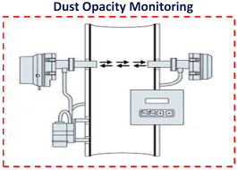
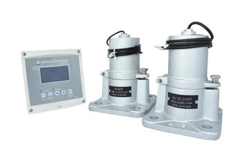
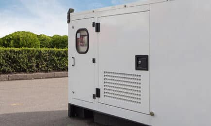
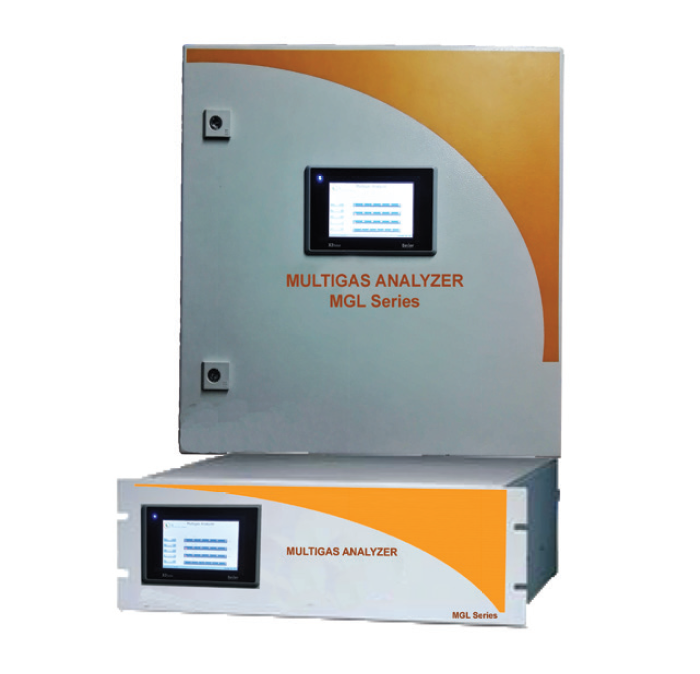
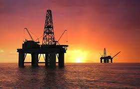
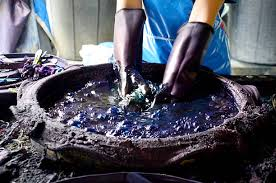

LKS is a Malaysian based company incorporated in early 1998. Today it is a growing engineering company specializing in Instrumentation & Valve, Continuous Emission Monitoring Systems, Online Effluent Monitoring Systems, Dust Analyzer Systems, Total Boiler Control Systems, Tank Gauging Systems, Plant-Wide Monitoring Systems, Water Treatment Control Systems, Gas Analyzer Monitoring Systems, Telemetry Control System and Industrial Automation Systems.

D10.3 is a measuring device which combines the advantages of transmittance and forward scattered light. Therefore, it is ideal for measurement of very low to high dust concentrations. The automatic self-alignment optimizes the position of the measuring beam and prevents incorrect measurement. The device also has an automatic check of zero and reference points. The sender uses a light emitting diode as its source of light.


Dust & Opacity Analyzer (Single Pass)
Measuring Principle :
D10.3 is a type-approved measuring device which combines the advantages of the measuring principles transmittance and scattered light forward. Therefore, it is ideal for measurement of very low to high dust concentrations. The automatic self-alignment optimized the position of the measuring beam and prevents incorrect measurement. An automatic check of zero and reference points as well as a contamination monitoring

Features
- Combination of transmittance and scattered light measurement
- For very low to high dust concentrations
- Automatic check of zero and reference point
- Contamination monitoring and compensation on both sides
- Automatic self-alignment
- For medium to large dust diameter
- CE mark by TUV
Benefit
- Combination of transmittance and scattered light measurement
- For very low to high dust concentrations
- Automatic check of zero and reference point
- Contamination monitoring and compensation on both sides
- Automatic self-alignment
- For medium to large dust diameter
- CE mark by TUV

Solid Fuel Boiler

Tunnel for Visibility

Gas Fuel Boiler

Generator Emission

Diesel Car Emission
LKS is a Malaysian based company incorporated in early 1998. Today it is a growing engineering company specializing in Instrumentation & Valve, Continuous Emission Monitoring Systems, Online Effluent Monitoring Systems, Dust Analyzer Systems, Total Boiler Control Systems, Tank Gauging Systems, Plant-Wide Monitoring Systems, Water Treatment Control Systems, Gas Analyzer Monitoring Systems, Telemetry Control System and Industrial Automation Systems.

VOCs gas analyzer is using high temperature method, there is a heating chamber inside for analytic gas path. By adopting air bath heating method, it can make chromatographic column and gas paths before of after it in high temperature condition. VOC gas analyzer is using FID principle to analysis. This technology is a gas separation technology that multi component gas mixture pass through special chemical fillings of chromatographic column, then effectively separated while flow out of the column. FID technology is one of the effective methods for detecting organic gas of low concentration. After been separated from the column, the gas continuously delivered into the FID detector by the carrier gas. Under high temperature ionization of FID detector hydrogen flame, the gas molecular bond is opened and release the free ions and electrons. Under high voltage electric field of FID detector release electrons move to one electrode of the electric field, and generate signal current from the measurement circuit which is related to the quantity of gas components into the detector.
Gas Analyzer
Measuring Principle :
VOCs gas analyzer is using high temperature method, there is a heating chamber inside for analytic gas path. By adopting air bath heating method, it can make chromatographic column and gas paths before of after it in high temperature condition.
VOC gas analyzer is using FID principle to analysis. This technology is a gas separation technology that multi component gas mixture pass through special chemical fillings of chromatographic column, then effectively separated while flow out of the column.
FID technology is one of the effective methods for detecting organic gas of low concentration. After been separated from the column, the gas continuously delivered into the FID detector by the carrier gas. Under high temperature ionization of FID detector hydrogen flame, the gas molecular bond is opened and release the free ions and electrons. Under high voltage electric field of FID detector release electrons move to one electrode of the electric field, and generate signal current from the measurement circuit which is related to the quantity of gas components into the detector.
Features
- Analyzer automatically blows the chromatographic column to speed up the component sieving and analysis
- Gas line is inert processed to avoid the adsorption and residue of samples on the pipe wall
- Configuration supports multiple detectors which can be used for complex sample analysis at the same time
Specification
| Principle | FID |
| Measuring Range | 0.01ppm ~ 1000ppm (by methane) |
| Range Drift | ≤ 3.0% (4h) |
| Linearity | < 4% above measurement Range |
| Ambient Temperature | -5°C to 40°C |
| Input flow of Sample Gas | 200mL/min |
| Size | 500mm x 500mm x 210mm |
| Display | Touch Screen LCD |
| Comm. Protocol | RS485 Modbus RTU / GSM / WIFI |
| Power Supply | 230VAC, 50/60Hz, 900W |
| Resolution | 0.001 ppm |
| Power Consumption | 500W |

Crude processing

Textile and dyeing
Chemical and pharmaceutical

Metal Smelting